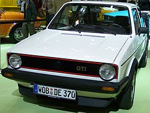
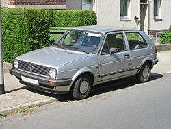
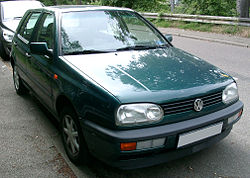
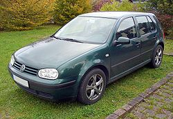
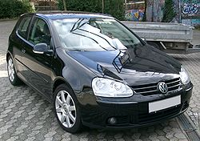
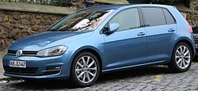

Golf 1
Prva generacija Golfa počela se prodavati 1974., a dvije godine kasnije dobila je i športsku GTI izvedbu koja je bila opremljena 1.6-litrenim benzinskim motorom snage 110 KS. Kabriolet se prodavao od 1979. do 1993. i s nešto manje od 390 tisuća prodanih primjeraka bio najprodavaniji kabriolet na svijetu. Iako se u Europi ta generacija prestala proizvoditi 1983., u Južnoj Africi još i danas postoji model Citi Golf, koji izgleda kao kombinacija prve i druge generacije nama znanih Golfova.Vise o GOLFU I
Golf II
Druga generacija hatchbacka, popularno zvana "dvica" ili "dvojka", predstavljena je 1983., a bila je također dostupna u GTI izvedbi, kao i još športskijoj Rally G60 sa 160 KS i Limited s 210 KS (proizvedeno samo 71 komad). 1990. na tržištu je bio i posebni model s pogonom na sve kotače i "terenskim" izgledom nazvan Golf Country. Druga generacija prestala se proizvoditi 1992., a tijekom njezine proizvodnje, 1979. uveden kabriolet prve generacije prodavao se bez značajnijih dizajnerskih promjena. Valja dodati da je to jedan od najpopularnijih auta tada, a i danas ljudi rade tuning na tim autima. Vise o GOLFU II
Golf III
Treća generacija predstavljena je 1991., a u top model se ugrađivao VR6 motor koji je u početku razvijao 174, a kasnije 191 KS. 1993. Golf je po prvi put predstavljen u karavanskoj inačici, a iste godine novi izgled su dobile i kabrioletska i GTI izvedba. Zračni jastuk za vozača postao je dio serijske opreme 1995., a bočni zračni jastuci postali su dodatna oprema 1996., kada je dio serijske opreme postao i ABS. Iste godine na tržištu je bio i posebni model GTI-ja, kojim se obilježavalo 20 godina od uvođenja prvog modela tog naziva. "Trojka" se prestala proizvoditi 1997., kada je predstavljena i četvrta generacija.
Golf IV
Od jeseni 1997. prodavan Golf "četvorka" bio je osim u standardnoj hatchback izvedbi dostupan i kao kabriolet i karavan, a 1998. u njega se počeo ugrađivati i pogon na sva četiri kotača nazvan 4motion. ESP je u serijsku opremu uvršten 1999., a bočne zračne zavjese tri godine kasnije. 2000. GTI se prodavao i u posebnoj izvedbi u povodu 25. godišnjice uvođenja prvog tako nazvanog modela na tržište, a 2002. predstavljen je i benzinski motor FSI s direktnim ubrizgavanjem goriva, kao i športska izvedba R32 opremljena 3.2-litrenim šesterocilindarskim motorom s 241 KS. Prije nego što je zamijenjen novom generacijom, Golf četvrte generacije kod nas se prodavao i s posebnim paketima opreme Ocean,Pacific,Edition,Special te GT Sport. Kabriolet se prestao proizvoditi u jesen 2002., a karavan je još uvijek moguće kupiti, makar će ga uskoro nasljediti Golf V karavan.
Golf V
Zasad pretposljednja, peta generacija predstavljena 2003. kod nas se počela prodavati paralelno s početkom 2004., a od početka 2005. dostupna je i u GTI izvedbi s 2-litrenim FSI motorom koji uz pomoć turbo punjača razvija 200 KS, te je s njime Golf u mogućnosti ubrzati od 0 do 100 km/h za 7.2 sekunde i postići maksimalnih 235 km/h. Još športskija izvedba R32 predstavljena je u rujnu 2005. na salonu automobila IAA, a opremljena je 3.2-litrenim šesterocilindarskim motorom s 250 KS koji omogućuje Golfu da od 0 do 100 km/h ubrza za 6.2 sekunde i postigne maksimalnu brzinu od 250 km/h. Od 2005. "petica" je također dostupna i u jednovolumenskoj izvedbi Golf Plus, koju karakterizira drugačiji izgled svjetala i desetak centimetara viša karoserija. Golf pete generacije u serijskoj opremi ima između ostalog ABS, ESP, BAS sigurnosne sustave, kao i šest zračnih jastuka, a uz dizelske TDI motore i GTI izvedbu moguće je naručiti novi automatizirani mjenjač DSG
Golf VI
Volkswagen Golf VI je nasljednik uspješnog modela Golf V, a prvi puta je prikazan u listopad 2008. na Pariz auto showu. Prve podatke i slike novog Golfa su u javnosti prikazane 2. kolovoza 2008. godine.[1] Vozilo je pušteno u Europi pušteno u prodaju tijekom zime te iste godine. Dizajnirao ga je Volkswagenov šef dizajna, Walter de'Silva. Osobine novog Golfa su mala buka motora, aerodinamičnost i mala potrošnja goriva. Proizvodio se do 2012. godine, kada ga je nasljedio Golf VII.
U ponudi su verzije sa dva četverocilindrična benzinska motora snage 80 KS (59 kW) i 160 KS (118 kW). U ponudi su i dva turbo dizelska motora snage 110 KS (81 kW) i 140 KS (103 kW). Po primjeru na ostale modele, koji su nakon ulaska u prodaju još dodatno osnaženi većim izborom motora, očekuje se da će se u Njemačkoj tijekom 2009. lansirati verzija sa BlueMotion Golfom koji bit trebao trošiti manje energije i biti ekonomičniji od ostalih modela.[2] Druga novost je da prvi puta u standardnu opremu svakog Golfa uključena i klima.[3]
Golf VI može imati dva različita mjenjača brzine, jedan ručni sa 6 stupnjeva i novi automatski sa 7 stupnjeva prijenosa.
Za sigurnost putnika ugrađeno je 7 značnih jastuka i ESP (Eletronic Stabilisation Programme) sustav. Na EURO NCAP testu dobio je svih pet zvjezdica.[4]
Uz osnovnu verziju postoji Golf VI Plus, Golf VI Variant, Golf R, Golf GTD i Golf GTI verzija koju pokreće 2.0 litreni turbo agregat koji razvija 211 KS uz 258 Nm okretnog momenta.
Golf VII
Volkswagen Golf VII je nasljednik uspješnog modela Golf VI, a prvi put je prikazan 4. Septembra 2012. godine u Berlinu, Njemačkoj, prije javnog lansiranja na Pariz Auto Showu, iste godine.
